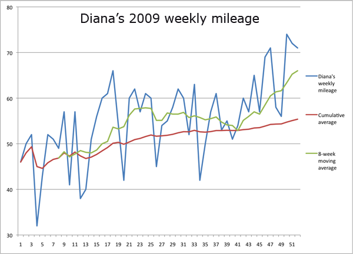

2009 running stats
I ran every day in 2009.
Total mileage: 2907 miles
Minimum daily mileage: 2 miles
Maximum daily mileage: 32.1 miles
Number of races run: 35
Personal records set: 19 (two in the 800m, one in the 1k, three in the mile, one in the 3k, five in the 5k, one in the 6k, three in the 5-mile, two in the 10k, one in the half marathon).
Total spent on race entry fees: $505
Total prize money won in races: $467
Other things won in races: Two pairs of shoes (1 Merrell, 1 Reebok), a pair of Red Sox tickets, four medals, a trophy, a plaque, two canvas tote bags (one pink, one pink and white), a beach towel, an aluminum water bottle, two pairs of running gloves (one of which says "Run the Rivah"), a bluetooth hands-free set, a six-pack of water, a freezable six-pack cooler, a pint glass, a Pilsner glass, a picture frame, and a spork.
T-shirts obtained: 17 (9 cotton, 8 synthetic).
Profit or loss on the season? Profit.
Mile PR progression: (5:30), 5:26, 5:22, 5:16.
5k PR progression: (19:50), 19:24, 19:11, 19:07, 18:58, 18:26.
5-mile PR progression: (33:50), 32:33, 32:21, 31:24, 31:20. 30:16. (Includes 5-mile splits during 5.7 mi and 10k races.)
10k PR progression: (41:59), 40:36, 37:53.

Return to Diana Davis